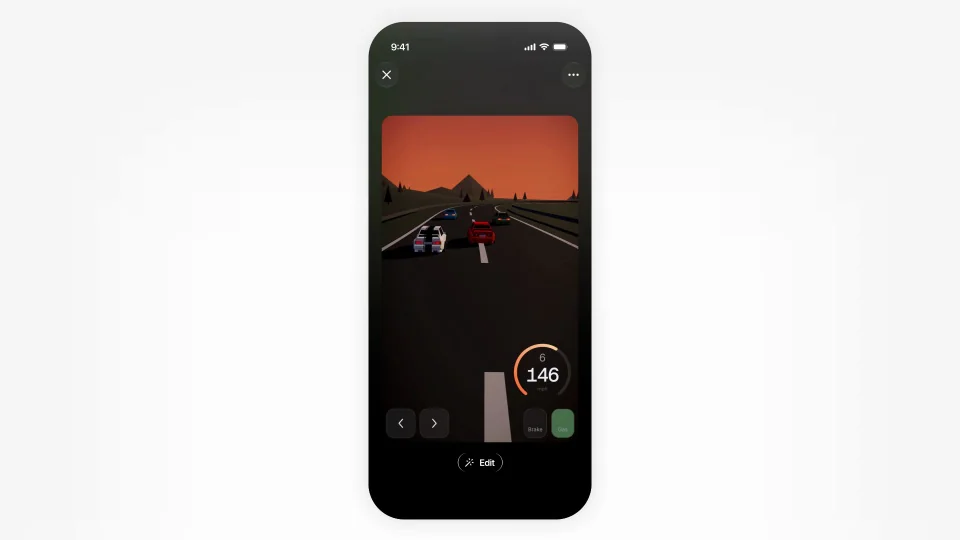
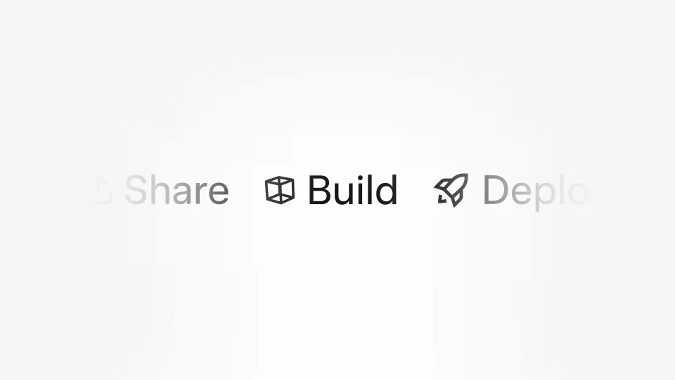
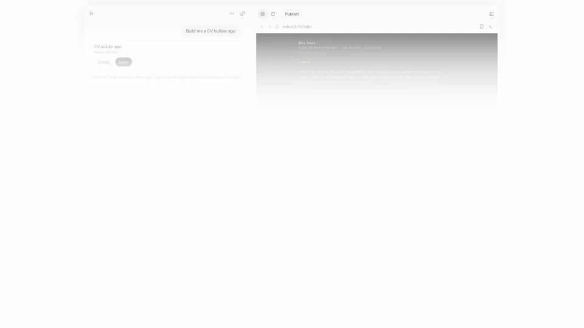
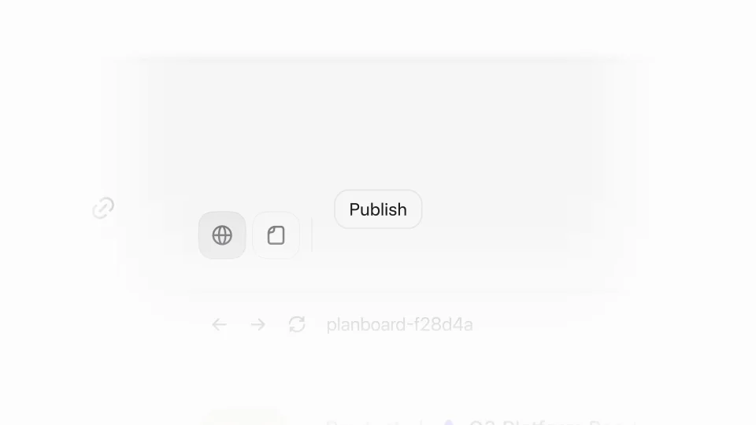

xAI / Grok / V328
Grok — one prompt to a published app
让一句要求经过可操作的预览和局部修改，最后成为能发布的应用。手机与桌面分别承担不同使用场景。
构图与编排 可播放 · 可替换内容
整体编排规则示例
查看 HTML 源码
<!doctype html><html lang="zh-CN"><meta charset="utf-8"><meta name="viewport" content="width=device-width,initial-scale=1"><title>Grok — one prompt to a published app · sequence</title><style>html,body{margin:0;width:100%;height:100%;overflow:hidden;background:#fafafa}canvas{display:block;width:100%;height:100%;object-fit:contain}</style><body data-mode="sequence"><canvas width="1000" height="600"></canvas><script src="data.js"></script><script src="common.js"></script><script src="scene.js"></script><script src="bridge.js"></script></body></html>画面元素模式菜单手机赛车预览车型选择桌面应用发布钮
MOTION LANGUAGE
动作与构图
局部动作 · 构图规则
01
白底把注意力留给应用本身
在大面积白色留白中放手机或桌面窗口，品牌说明使用短黑字。界面正文用无衬线，代码或状态文字降低字号与对比，预览结果保持最大面积。
02
第一个例子先证明能玩
第一个例子先证明能玩规则示例
查看 HTML 源码
<!doctype html><html lang="zh-CN"><meta charset="utf-8"><meta name="viewport" content="width=device-width,initial-scale=1"><title>Grok — one prompt to a published app · sequence</title><style>html,body{margin:0;width:100%;height:100%;overflow:hidden;background:#fafafa}canvas{display:block;width:100%;height:100%;object-fit:contain}</style><body data-mode="clip" data-start="0" data-end="19"><canvas width="1000" height="600"></canvas><script src="data.js"></script><script src="common.js"></script><script src="scene.js"></script><script src="bridge.js"></script></body></html>从模式选择进入手机上的赛车应用，打开预览后给出一段连续操作。车型选择出现时，把选中的车同步带回同一个游戏画面。
03
桌面例子说明能继续修改
切换到履历或项目管理应用时，沿用请求、预览、修改的关系。让输入区与结果区并排，修改发生后保留前后对应的位置。
04
发布是任务的终点
发布是任务的终点规则示例
查看 HTML 源码
<!doctype html><html lang="zh-CN"><meta charset="utf-8"><meta name="viewport" content="width=device-width,initial-scale=1"><title>Grok — one prompt to a published app · sequence</title><style>html,body{margin:0;width:100%;height:100%;overflow:hidden;background:#fafafa}canvas{display:block;width:100%;height:100%;object-fit:contain}</style><body data-mode="clip" data-start="32" data-end="50"><canvas width="1000" height="600"></canvas><script src="data.js"></script><script src="common.js"></script><script src="scene.js"></script><script src="bridge.js"></script></body></html>应用内容完整后再出现 Publish。点击后给清楚的落点，最后用跨设备短句概括覆盖范围，不在生成中间提前结束。
05
多个例子如何共用一条线
先用手机交互建立直观体验，再用桌面任务扩大用途。每个例子都比前一个多交代一项能力，结尾汇到发布。
06
替换应用与品牌
新版本可改成画板、课程工具或团队工作台。准备一个能展示交互的例子和一个能展示修改的例子，最后给它们相同的交付动作。
SEQUENCE
段落与节奏
点击段落，定位到上方编排示意。





画面参考 · 离散静帧
KEEP THE RELATIONSHIPS
制作其他主题
- 可替换成设计工具：输入→交互预览→局部修改→发布。
- 产物必须可识别，不能用泛化卡片替代全部实例。
制作约束
模式菜单 / 手机 / 赛车预览 / 车型选择 / 桌面应用 / 发布钮
- 先展示生成后能实际操作，再切到桌面展示另一类可发布应用。
- 车型切换必须反映到同一赛车对象，预览与编辑有连续性。
- 最后点击发布作为交付终点，不能只留下生成中的界面。